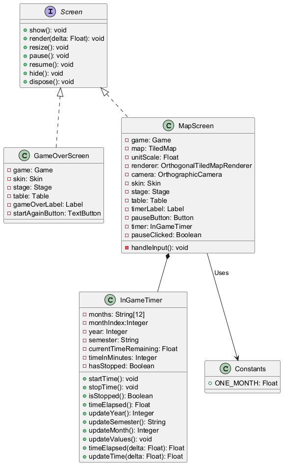
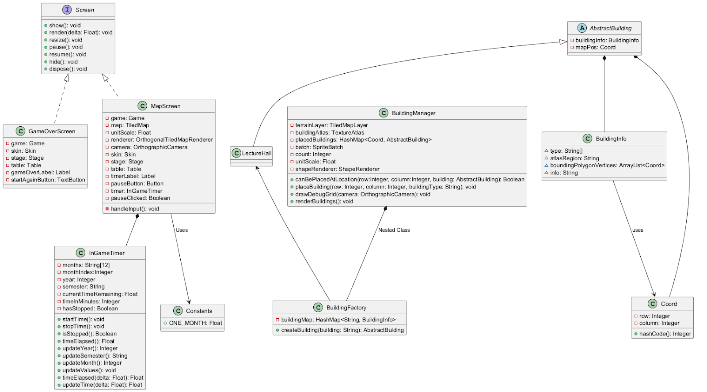
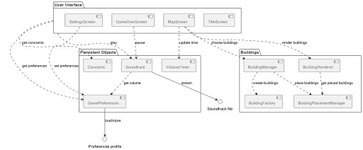
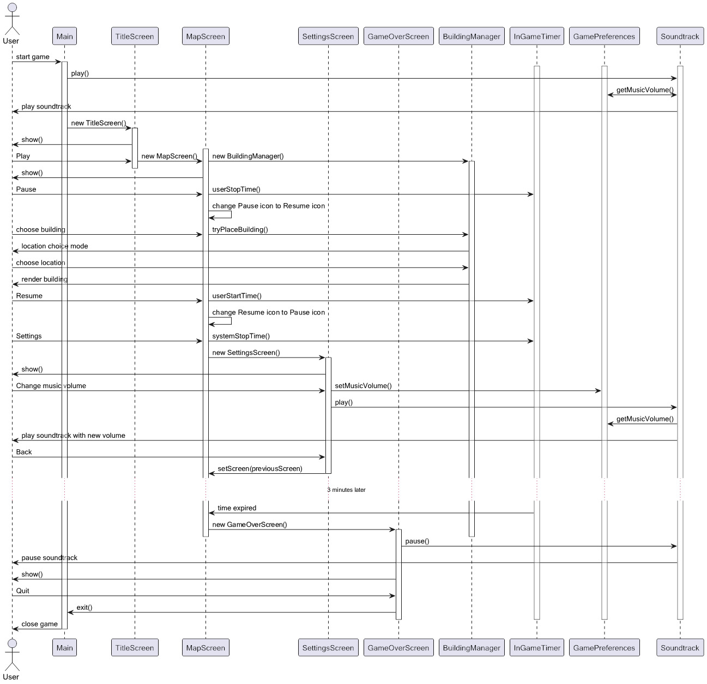
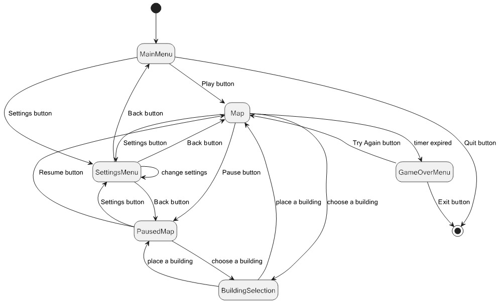

BackLogged UniSim - Cohort 3 Group 10

Class Diagrams
Final Version

Version 1

Version 2

Version 3

Component Diagrams
Component Diagram

Component Diagram UML code
@startuml
package "User Interface" as ui {
[TitleScreen] as ts
[MapScreen] as ms
[SettingsScreen] as ss
[GameOverScreen] as go
}
package "Persistent Objects" as po {
[Soundtrack] as st
[GamePreferences] as gp
[Constants] as cs
[InGameTimer] as it
}
package "Buildings" as bd {
[BuildingManager] as bm
[BuildingRenderer] as br
[BuildingFactory] as bf
[BuildingPlacementManager] as bp
}
interface "Preferences profile" as pp
interface "Soundtrack file" as sf
ui ..> gp : get preferences
ss ..> gp : set preferences
st ..> gp : get volume
gp --> pp : load/store
ui ..> st : play
go ..> st : pause
ms ..> it : update time
ui ..> cs : get constants
ms ..> bm : choose buildings
ms ..> br : render buildings
st --> sf : stream
bm ..> bp : place buildings
bm ..> bf : create buildings
br ..> bp : get placed buildings
@enduml
Concept Art
Logo Ideas

Logo V1

Logo V2

Map V1

Map V2

Title Screen V1

TitleScreenV2

Gantt Diagrams
Gantt Diagram

Gantt Diagram UML code
@startgantt
Project starts 2024-10-03
-- Risk assessment --
[Risk Assessment] as [a0] requires 14 days and is coloured in Coral
-- Requirements --
[Requirements elicitation] as [r0] requires 14 days and is coloured in Green
[Questions write up] as [r1] requires 3 days and is coloured in GreenYellow
[Client interview] as [r2] requires 1 day and is coloured in GreenYellow
[User requirements table] as [r3] requires 4 days and is coloured in GreenYellow
[System requirements table] as [r4] requires 4 days and is coloured in GreenYellow
[Additional client consultations] as [r5] requires 1 day and is coloured in GreenYellow
[Final requirements table] as [r6] requires 1 day and is coloured in GreenYellow
-- Method Selection and Planning --
[Method Selection and Planning] as [m0] requires 7 days and starts D+14 and is coloured in MediumOrchid
-- Implementation --
[Prototype development] as [i0] requires 18 days and starts D+14 and is coloured in SteelBlue
[UI Design] as [i1] requires 10 days and starts D+14 and is coloured in LightBlue
[Game logic design] as [i2] requires 5 days and starts D+16 and is coloured in LightBlue
[Prototype design] as [i3] requires 8 days and starts at [i2]'s end and is coloured in LightBlue
[Prototype testing] as [i4] requires 2 days and starts at [i3]'s end and is coloured in LightBlue
[Final prototype] happens on 2024-11-03
[r1] starts at [r0]'s start
[r2] starts at [r1]'s end
[r3] starts at [r2]'s end
[r4] starts at [r3]'s end
[r5] starts at [r4]'s end
[r6] starts at [r5]'s end
@endgantt
Meeting Notes
Meeting Notes
Sequence Diagrams
Sequence Diagram

Sequence Diagram UML code
@startuml
!pragma teoz true
actor User
participant Main
participant TitleScreen
participant MapScreen
participant SettingsScreen
participant GameOverScreen
participant BuildingManager
participant InGameTimer
participant GamePreferences
participant Soundtrack
User -> Main: start game
activate Main
activate Soundtrack
activate InGameTimer
activate GamePreferences
Main -> Soundtrack : play()
Soundtrack <-> GamePreferences : getMusicVolume()
Soundtrack -> User : play soundtrack
Main -> TitleScreen : new TitleScreen()
activate TitleScreen
TitleScreen -> User : show()
User -> TitleScreen : Play
activate MapScreen
& TitleScreen -> MapScreen : new MapScreen()
& MapScreen -> BuildingManager : new BuildingManager()
activate BuildingManager
deactivate TitleScreen
MapScreen -> User : show()
User -> MapScreen : Pause
& MapScreen -> InGameTimer : userStopTime()
MapScreen -> MapScreen : change Pause icon to Resume icon
User -> MapScreen : choose building
& MapScreen -> BuildingManager : tryPlaceBuilding()
BuildingManager -> User : location choice mode
User -> BuildingManager : choose location
BuildingManager -> User : render building
User -> MapScreen : Resume
& MapScreen -> InGameTimer : userStartTime()
MapScreen -> MapScreen : change Resume icon to Pause icon
User -> MapScreen : Settings
& MapScreen -> InGameTimer : systemStopTime()
MapScreen -> SettingsScreen : new SettingsScreen()
activate SettingsScreen
SettingsScreen -> User : show()
User -> SettingsScreen : Change music volume
& SettingsScreen -> GamePreferences : setMusicVolume()
SettingsScreen -> Soundtrack: play()
Soundtrack -> GamePreferences : getMusicVolume()
Soundtrack -> User : play soundtrack with new volume
User -> SettingsScreen : Back
SettingsScreen -> MapScreen : setScreen(previousScreen)
deactivate SettingsScreen
...3 minutes later...
InGameTimer -> MapScreen : time expired
MapScreen -> GameOverScreen : new GameOverScreen()
activate GameOverScreen
deactivate MapScreen
deactivate BuildingManager
GameOverScreen -> Soundtrack : pause()
Soundtrack -> User : pause soundtrack
GameOverScreen -> User : show()
User -> GameOverScreen : Quit
GameOverScreen -> Main : exit()
deactivate InGameTimer
deactivate GamePreferences
deactivate GameOverScreen
deactivate Soundtrack
Main -> User : close game
deactivate Main
@enduml
State Diagrams
State Diagram

State Diagram UML code
@startuml
hide empty description
[*] --> MainMenu
MainMenu --> Map : Play button
MainMenu --> SettingsMenu : Settings button
MainMenu --> [*] : Quit button
Map --> PausedMap : Pause button
Map --> BuildingSelection : choose a building
Map --> SettingsMenu : Settings button
Map --> GameOverMenu : timer expired
SettingsMenu --> SettingsMenu : change settings
SettingsMenu --> MainMenu : Back button
SettingsMenu --> Map : Back button
SettingsMenu --> PausedMap: Back button
PausedMap --> Map : Resume button
PausedMap --> BuildingSelection : choose a building
PausedMap --> SettingsMenu : Settings button
BuildingSelection --> Map: place a building
BuildingSelection --> PausedMap : place a building
GameOverMenu --> Map: Try Again button
GameOverMenu --> [*]: Exit button
@enduml